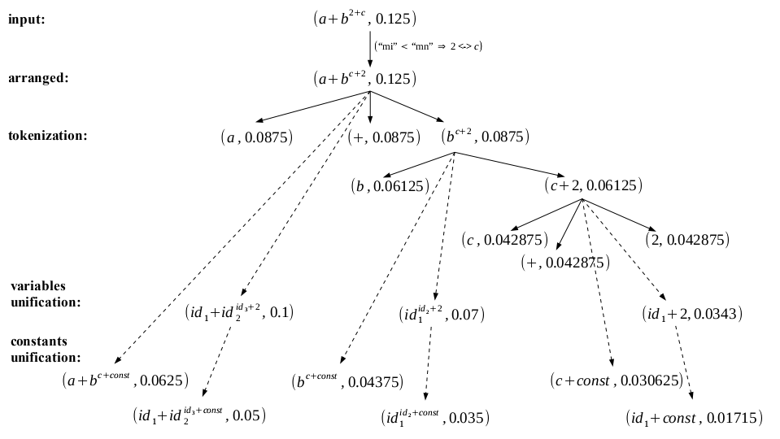
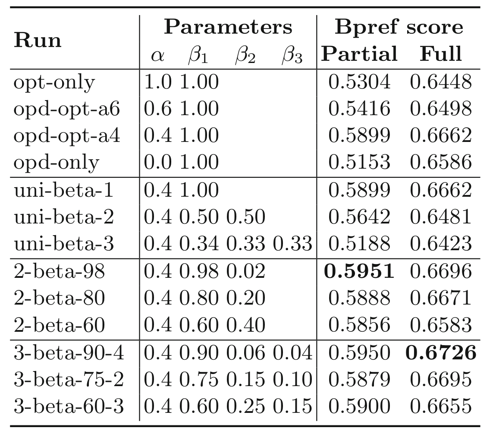
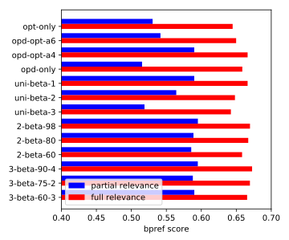
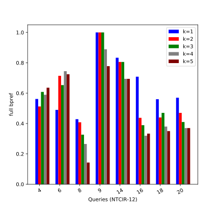
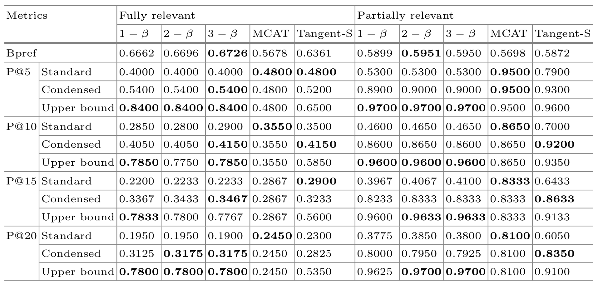
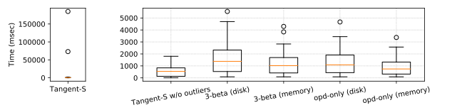

Structure Similarity Search for Formulas using Leaf-root Paths in Operator Subtrees
Wei Zhong and Richard Zanibbi
wxz8033@rit.edu, rlaz@cs.rit.edu Rochester Institute of Technology, Rochester, USA
Mathematical Information Retrieval (MIR)
- Detect and extract math expressions from scientific document (e.g., PDF)
- Computational scientific search (e.g., WolframAlpha)
- Handwritten formulas and formula image recognition
- Search math by similarity
What do you mean by search math by similarity?

Problems in math similarity search
- Need new representation (Bag of words model may not be appropriate for highly structured content)
- Math is structured rather than linear
- Symbols can be used interchangeably (e.g., $x^2+x$ and $a^2+a$)
- Need new similarity measurement (word frequency and proximity are not enough)
- Associativity/commutativity (e.g., $x+xy$ and $ab+b$)
- Sub-expression identification (e.g., $a(x+1)$ vs. $ax+1$ and $x + 1$)
- How to design an effective retrieval model for formulas?
- ...... (list goes on)
Math representation (Text-based)
Math representation (Tree-based)
 Symbol Layout Tree
Symbol Layout Tree
Intuition
Vandermonde-like identitiesSimilarity measurement
$ (a+bc)+xy $
Time complexity for finding common subtree
- $O((m^{1.5} / \log m) \cdot n)$ $^{[1]}$ for finding subtree isomorphism
- $O(n + m)$ $^{[2]}$ for finding largest common forest between rooted trees, but requires vertex matching outdegree, it also needs parent/children info to construct a Directed Acyclic Graph before starting aligning nodes
[2] G. Valiente, "An efficient bottom-up distance between trees," Proceedings Eighth Symposium on String Processing and Information Retrieval, 2001.
Matching from leaf-root paths
leaf-root paths match $\implies$ corresponding structure aligned
Leaf-root path assumption may fail
leaf-root paths match $\nRightarrow$ corresponding structure aligned.
Greedy widest-first matching strategy
$T_1$
$T_2$
$T_3$
is greater than
$\Gamma(T_1, T_3) = \gamma(\pi_{1,3} \in \Pi(T_1, T_3)) = (3, 0, 0)$ if $\alpha = 0$ and $\beta_1 \gg \beta_2 ... \gg \beta_n$,
Greedy widest-first matching assumption
Greedy widest match $\nRightarrow$ optimal formula tree similarity.
This assumption may not hold neither
Greedy widest match $\nRightarrow$ optimal formula tree similarity.
Retrieval model (High-level idea)
- Break the formulas into leaf-root or leaf-to-node paths.
- Use path as "word" and construct an inverted index.
- At query processing time, process one document expression at a time.
- Given a set of "hit paths":
- Find the widest common subtree by counting paths grouped by root-end node.
- Exclude the previously matched paths and find the next widest matched common subtree.
- Repeat this loop until K common subexpressions have been found.
- On top of those matched paths, we further match operators.
- Calculate similarity and ranking score.
#10") group("GROUP
#8") add --- group group --- add2 add2("ADD
#7") add2 --- a("a
#1") add2 --- times1("TIMES
#6") times1 --- b("b
#2") times1 --- c("c
#3") add --- times2("TIMES
#9") times2 --- x("x
#4") times2 --- y("y
#5") linkStyle 3 stroke:#009,stroke-width:8px; linkStyle 4 stroke:#009,stroke-width:8px; style add2 stroke:#009,stroke-width:8px style times1 stroke:#009,stroke-width:8px style b stroke:#009,stroke-width:8px
Hit path set
7~1 (ADD, VAR): 8~1. 6~2 (TIMES, VAR): 6~2, 6~3, 7~4, 7~5. 6~3 (TIMES, VAR): 6~2, 6~3, 7~4, 7~5. 9~4 (TIMES, VAR): 6~2, 6~3, 7~4, 7~5. 9~5 (TIMES, VAR): 6~2, 6~3, 7~4, 7~5. 7 ~2 (ADD, TIMES, VAR): 8~2, 8~3, 8~4, 8~5. 7 ~3 (ADD, TIMES, VAR): 8~2, 8~3, 8~4, 8~5. 10~4 (ADD, TIMES, VAR): 8~2, 8~3, 8~4, 8~5. 10~5 (ADD, TIMES, VAR): 8~2, 8~3, 8~4, 8~5.
Hit paths (document paths on the right)
#10") group("GROUP
#8") add --- group group --- add2 add2("ADD
#7") add2 --- a("a
#1") add2 --- times1("TIMES
#6") times1 --- b("b
#2") times1 --- c("c
#3") add --- times2("TIMES
#9") times2 --- x("x
#4") times2 --- y("y
#5") linkStyle 2 stroke:#080,stroke-width:8px; linkStyle 3 stroke:#080,stroke-width:8px; linkStyle 4 stroke:#080,stroke-width:8px; linkStyle 5 stroke:#080,stroke-width:8px; style add2 stroke:#080,stroke-width:8px style times1 stroke:#080,stroke-width:8px style a stroke:#080,stroke-width:8px style b stroke:#080,stroke-width:8px style c stroke:#080,stroke-width:8px linkStyle 7 stroke:#800,stroke-width:8px; linkStyle 8 stroke:#800,stroke-width:8px; style times2 stroke:#800,stroke-width:8px style x stroke:#800,stroke-width:8px style y stroke:#800,stroke-width:8px
#8") add --- a("a
#1") add --- times1("TIMES
#6") times1 --- b("b
#2") times1 --- c("c
#3") add --- times2("TIMES
#7") times2 --- x("x
#4") times2 --- y("y
#5") linkStyle 0 stroke:#080,stroke-width:8px; linkStyle 1 stroke:#080,stroke-width:8px; linkStyle 2 stroke:#080,stroke-width:8px; linkStyle 3 stroke:#080,stroke-width:8px; style add stroke: #080,stroke-width:8px style times1 stroke:#080,stroke-width:8px style a stroke:#080,stroke-width:8px style b stroke:#080,stroke-width:8px style c stroke:#080,stroke-width:8px linkStyle 5 stroke:#800,stroke-width:8px; linkStyle 6 stroke:#800,stroke-width:8px; style times2 stroke:#800,stroke-width:8px style x stroke:#800,stroke-width:8px style y stroke:#800,stroke-width:8px
Example
| Qry\Doc | 8~1, 8~2, 8~3, 8~4, 8~5 | 6~2, 6~3 | 7~4, 7~5 |
|---|---|---|---|
| 7~1, 7~2, 7~3 | <7~1, 8~1>, <7~2, 8~2>, <7~3, 8~3> | ||
| 6~2, 6~3 | <6~2, 6~2>, <6~3, 6~3> | <6~2, 7~4>, <6~3, 7~5> | |
| 9~4, 9~5 | <9~4, 6~2>, <9~5, 6~3> | <9~4, 7~4>, <9~5, 7~5> | |
| 10~4, 10~5 | <10~4, 8~2>, <10~5, 8~3> |
#10") group("GROUP
#8") add --- group group --- add2 add2("ADD
#7") add2 --- a("a
#1") add2 --- times1("TIMES
#6") times1 --- b("b
#2") times1 --- c("c
#3") add --- times2("TIMES
#9") times2 --- x("x
#4") times2 --- y("y
#5") linkStyle 2 stroke:#080,stroke-width:8px; linkStyle 3 stroke:#080,stroke-width:8px; linkStyle 4 stroke:#080,stroke-width:8px; linkStyle 5 stroke:#080,stroke-width:8px; style add2 stroke:#080,stroke-width:8px style times1 stroke:#080,stroke-width:8px style a stroke:#080,stroke-width:8px style b stroke:#080,stroke-width:8px style c stroke:#080,stroke-width:8px
#8") add --- a("a
#1") add --- times1("TIMES
#6") times1 --- b("b
#2") times1 --- c("c
#3") add --- times2("TIMES
#7") times2 --- x("x
#4") times2 --- y("y
#5") linkStyle 0 stroke:#080,stroke-width:8px; linkStyle 1 stroke:#080,stroke-width:8px; linkStyle 2 stroke:#080,stroke-width:8px; linkStyle 3 stroke:#080,stroke-width:8px; style add stroke: #080,stroke-width:8px style times1 stroke:#080,stroke-width:8px style a stroke:#080,stroke-width:8px style b stroke:#080,stroke-width:8px style c stroke:#080,stroke-width:8px
Example (Cont.)
| Qry\Doc | 8~1, 8~2, 8~3, 8~4, 8~5 | 6~2, 6~3 | 7~4, 7~5 |
|---|---|---|---|
| 7~1, 7~2, 7~3 | <7~1, 8~1>, <7~2, 8~2>, <7~3, 8~3> | ||
| 6~2, 6~3 | <6~2, 6~2>, <6~3, 6~3> | <6~2, 7~4>, <6~3, 7~5> | |
| 9~4, 9~5 | <9~4, 6~2>, <9~5, 6~3> | <9~4, 7~4>, <9~5, 7~5> | |
| 10~4, 10~5 | <10~4, 8~2>, <10~5, 8~3> |
#10") group("GROUP
#8") add --- group group --- add2 add2("ADD
#7") add2 --- a("a
#1") add2 --- times1("TIMES
#6") times1 --- b("b
#2") times1 --- c("c
#3") add --- times2("TIMES
#9") times2 --- x("x
#4") times2 --- y("y
#5") linkStyle 2 stroke:#080,stroke-width:8px; linkStyle 3 stroke:#080,stroke-width:8px; linkStyle 4 stroke:#080,stroke-width:8px; linkStyle 5 stroke:#080,stroke-width:8px; style add2 stroke:#080,stroke-width:8px style times1 stroke:#080,stroke-width:8px style a stroke:#080,stroke-width:8px style b stroke:#080,stroke-width:8px style c stroke:#080,stroke-width:8px linkStyle 7 stroke:#800,stroke-width:8px; linkStyle 8 stroke:#800,stroke-width:8px; style times2 stroke:#800,stroke-width:8px style x stroke:#800,stroke-width:8px style y stroke:#800,stroke-width:8px
#8") add --- a("a
#1") add --- times1("TIMES
#6") times1 --- b("b
#2") times1 --- c("c
#3") add --- times2("TIMES
#7") times2 --- x("x
#4") times2 --- y("y
#5") linkStyle 0 stroke:#080,stroke-width:8px; linkStyle 1 stroke:#080,stroke-width:8px; linkStyle 2 stroke:#080,stroke-width:8px; linkStyle 3 stroke:#080,stroke-width:8px; style add stroke: #080,stroke-width:8px style times1 stroke:#080,stroke-width:8px style a stroke:#080,stroke-width:8px style b stroke:#080,stroke-width:8px style c stroke:#080,stroke-width:8px linkStyle 5 stroke:#800,stroke-width:8px; linkStyle 6 stroke:#800,stroke-width:8px; style times2 stroke:#800,stroke-width:8px style x stroke:#800,stroke-width:8px style y stroke:#800,stroke-width:8px
Matched tree leaves: (3, 2, 0) ($k=3$)
Example (Cont.)
| Qry\Doc | 8~1, 8~2, 8~3, 8~4, 8~5 | 6~2, 6~3 | 7~4, 7~5 |
|---|---|---|---|
| 7~1, 7~2, 7~3 | <7~1, 8~1>, <7~2, 8~2>, <7~3, 8~3> | ||
| 6~2, 6~3 | <6~2, 6~2>, <6~3, 6~3> | <6~2, 7~4>, <6~3, 7~5> | |
| 9~4, 9~5 | <9~4, 6~2>, <9~5, 6~3> | <9~4, 7~4>, <9~5, 7~5> | |
| 10~4, 10~5 | <10~4, 8~2>, <10~5, 8~3> |
#10") group("GROUP
#8") add --- group group --- add2 add2("ADD
#7") add2 --- a("a
#1") add2 --- times1("TIMES
#6") times1 --- b("b
#2") times1 --- c("c
#3") add --- times2("TIMES
#9") times2 --- x("x
#4") times2 --- y("y
#5") linkStyle 2 stroke:#080,stroke-width:8px; linkStyle 3 stroke:#080,stroke-width:8px; linkStyle 4 stroke:#080,stroke-width:8px; linkStyle 5 stroke:#080,stroke-width:8px; style add2 stroke:#080,stroke-width:8px style times1 stroke:#6e6,stroke-width:8px style a stroke:#080,stroke-width:8px style b stroke:#080,stroke-width:8px style c stroke:#080,stroke-width:8px linkStyle 7 stroke:#800,stroke-width:8px; linkStyle 8 stroke:#800,stroke-width:8px; style times2 stroke:#800,stroke-width:8px style x stroke:#800,stroke-width:8px style y stroke:#800,stroke-width:8px
#8") add --- a("a
#1") add --- times1("TIMES
#6") times1 --- b("b
#2") times1 --- c("c
#3") add --- times2("TIMES
#7") times2 --- x("x
#4") times2 --- y("y
#5") linkStyle 0 stroke:#080,stroke-width:8px; linkStyle 1 stroke:#080,stroke-width:8px; linkStyle 2 stroke:#080,stroke-width:8px; linkStyle 3 stroke:#080,stroke-width:8px; style add stroke: #080,stroke-width:8px style times1 stroke:#080,stroke-width:8px style a stroke:#080,stroke-width:8px style b stroke:#080,stroke-width:8px style c stroke:#080,stroke-width:8px linkStyle 5 stroke:#800,stroke-width:8px; linkStyle 6 stroke:#800,stroke-width:8px; style times2 stroke:#800,stroke-width:8px style x stroke:#800,stroke-width:8px style y stroke:#800,stroke-width:8px
Matched internal nodes: (2, 1, 0) ($k=3$)
Avoid counting "invisible" operators
Ranking score
Structure similarity $S_{\text{st}}$ is normalized formula tree similarity:
$$
\Gamma_\gamma(T_q, T_d) = \max_{\pi} \gamma(\pi)
$$
Symbol set similarity $S_{\text{sy}}$ is a function of normalized Mark-and-
Cross score$^{[1]}$ $y$, which is defined as:
$ S_{\text{sy}} = \frac 1 {1 + (1 - y)^2} $
Overall score for one document formula: $$ \frac{ S_{\text{st}} S_{\text{sy}} }{ S_{\text{st}} + S_{\text{sy}} } \left[ (1-\theta) + \theta \frac 1 {\log(1 + |\mathcal{P}(T_d)|)} \right] \quad (\theta = 0.05) $$
Evaluation
- 2016 NTCIR-12 dataset of 590,000 formulas. 20 non-wildcards queries$^{[1]}$.
- Pooled hits are evaluated by two human assessors, score from 0 to 4.
- For bpref, top-1000 results are considered.
- Standard, condensed and upper-bound Precision@K values are reported.
Effect of different $\alpha, \beta$ weights
 (1) Evenly distributed beta weights are not effective, (2) weighting operands higher boost are effective, and (3) multi-tree matching helps, but small gap over single-tree matching.
Uniform weights effectiveness over different $k$
 (1) Query behaviours vary on different $k$ values, (2) most queries do not gainany thing from multiple tree matching, given uniform weights, and
(3) those who can benefit are less complex queries.
Compare with other systems
We can consistently outperform others in fully relevant results, except for standard Precision@K metrics due to missing judgements.
Efficiency evaluation
No significant outliers, still not considered usable system,
but there are great potential we can foresee.
Sample results
Query $r_{xy}=\frac{{\color{Maroon}\sum} _{{\color{Maroon}i}={\color{Maroon}1}}^{{\color{Maroon}n}}({\color{Maroon}x}_{{\color{Maroon}i}}-\bar{{\color{Maroon}x}})({\color{Maroon}y}_{{\color{Maroon}i}}-\bar{{\color{Maroon}y}})}{(n-1)s_{x}s_{y}}=\frac{{\color{Orange}\sum} _{{\color{Orange}i}={\color{Orange}1}}^{{\color{Orange}n}}(x_{i}-\bar{x})(y_{i}-\bar{y})}{\sqrt{{\color{Green}\sum} _{{\color{Green}i}={\color{Green}1}}^{{\color{Green}n}}({\color{Green}x}_{{\color{Green}i}}-\bar{{\color{Green}x}})^{{\color{Green}2}}\sum _{i=1}^{n}(y_{i}-\bar{y})^{2}}}$ Doc formula $r=\frac{{\color{Maroon}\sum}^{{\color{Maroon}N}}_{{\color{Maroon}i}={\color{Maroon}1}}({\color{Maroon}X}_{{\color{Maroon}i}}-\bar{{\color{Maroon}X}})({\color{Maroon}Y}_{{\color{Maroon}i}}-\bar{{\color{Maroon}Y}})}{\sqrt{{\color{Green}\sum}^{{\color{Green}N}}_{{\color{Green}i}={\color{Green}1}}({\color{Green}X}_{{\color{Green}i}}-\bar{{\color{Green}X}})^{{\color{Green}2}}}\sqrt{{\color{Orange}\sum}^{{\color{Orange}N}}_{{\color{Orange}i}={\color{Orange}1}}(Y_{i}-\bar{Y})^{2}}}$

Conclusion
- Structure-aware similarity search based on matching subexpressions, good at identifying fully relevant results, and it uses simple indexing schema.
- Effectiveness observations: impact of operator vs. operand number, non-uniform weights boost result, count only "visible" operators.
- Efficiency observations: consistent performance, computation bounded, great potential to improve (with lengthy query).
- Future Agenda: Improve efficiency by pruning and skipping, implement wildcards, handle "math synonyms", and combine text keywords into query.
Thank you!
Thanks the Sloan foundation for providing financial support for my studies.